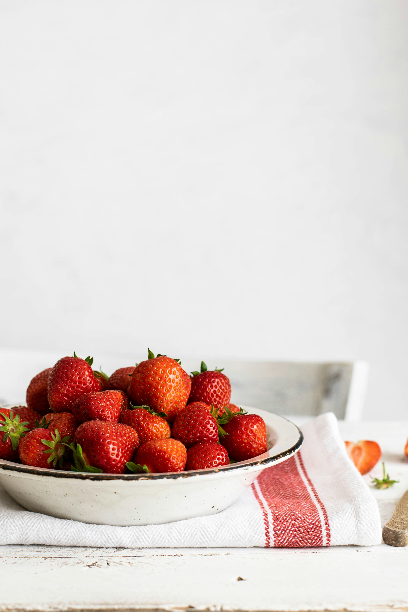

수박은 전 세계에서 두 번째로 많이 재배되는 과일입니다. 대표적인 여름 제철 채소 또는 과일로
여름을 상징하는 이미지입니다. 열매를 식용하는 과채류, 즉 채소입니다. 하지만 언어학적으로나 법적으로는
과일로도 속하게 됩니다. 당분 함량은 수박 100g당 당분 6.2g으로 단맛이 강한 데 반해 당분 함량은 적은 편입니다.
이는 신맛을 내는 유기산 함량이 매우 낮아서 순수하게 단맛만이 강하게 느겨찌기 때문입니다.
현재 시중에 거래되는 가격은 3kg에 12,150원(100g당 405원)입니다.
멜론
칼륨이 풍부합니다. 이뇨 효과가 있어 몸의 부기를 빼고 신장 기능에 도움을 줍니다. 또한 비타민C가 함유되어 있습니다.
과육에 함유된 카로티노이드는 암을 예방하는 효과가 있으며 특히 폐암 예방용으로 좋습니다. 멜론은 당분과 수분이 많아
체내 수분 보충에도 도움을 줍니다. 현재 시중에 거래되는 가격은 1.6kg에 8,900원(100g당 556원)입니다.
딸기

특유의 단맛과 상큼함, 부드러움의 조화가 좋은 편입니다. 100g당 비타민C 함유량이 62mg이며 달지만, 실제 당의
양은 훨씬 적어 건강에도 좋은 편입니다.
딸기는 영양 및 건강 측면에서 볼 때 아주 좋은 과일입니다. 100g당 칼로리가 36kcal로 여타 과일들보다 상당히 낮은
편에, 소염 및 진통 작용을 하는 메탈살리실산을 함유하고 고혈압, 당뇨, 비만, 심혈관 질환과 같은 성인병을 예방하는 효과가
있습니다. 호불호를 거의 타지 않는 달콤한 맛을 가졌음에도 칼로리가 상당히 낮아서 맛과 건강을 모두 챙긴 과일입니다.
현재 시중에 거래되는 가격은 2kg에 15,800원(100g당 790원)입니다.